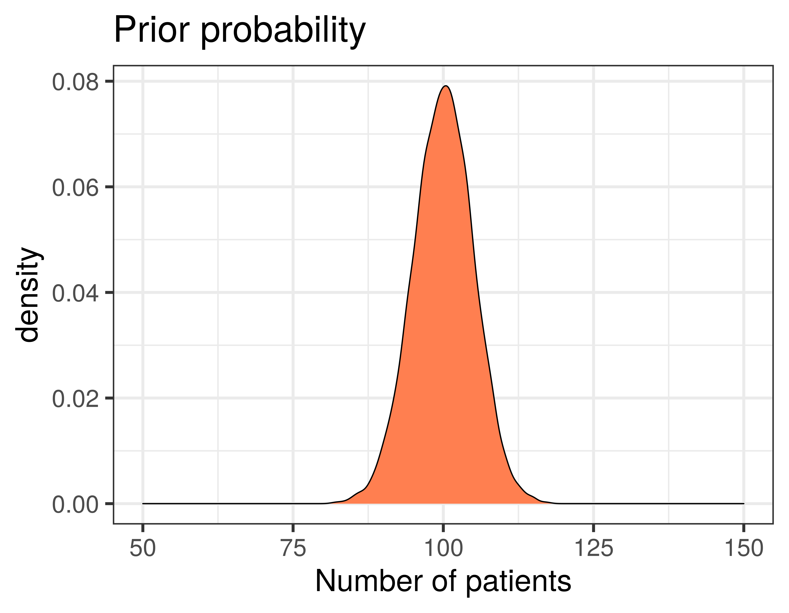
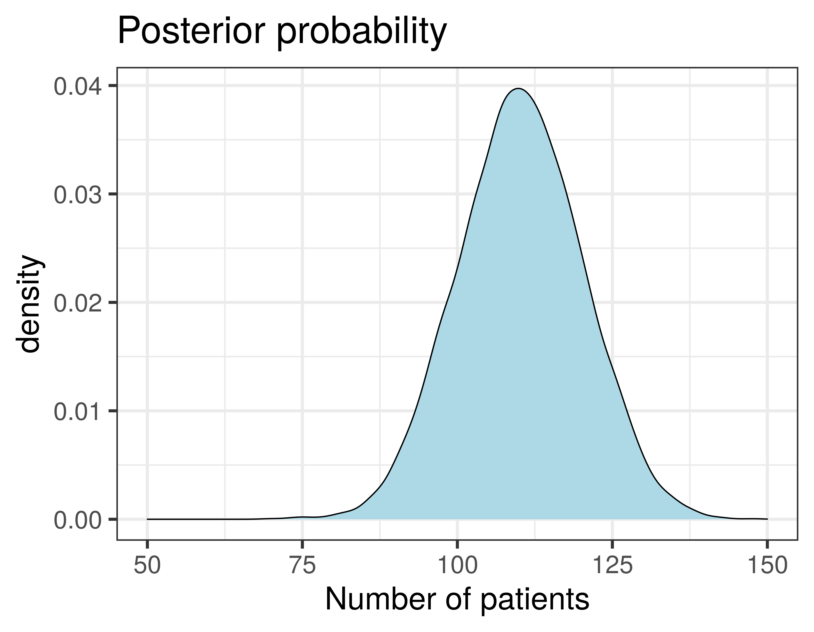

Bayesian phylogenetics
BIOL33221: Bioinformatics
Dr Axel Barlow
email: axel.barlow@ntu.ac.uk
Bayesian phylogenetics
- Bayesian statistics
- Phylogenetic models
- Prior and posterior distributions
- MCMC sampling
- Interpreting results
Introductory video 1
https://www.youtube.com/watch?v=IqMzYTOf6H0&ab_channel=DataCamp
Introductory video 2
https://www.youtube.com/watch?v=FmzgKXV53-w&ab_channel=DataCamp
The key points
- Bayesian statistics provide a way of describing our prior knowledge of a system as a probability
- We can then update this
prior probabilityby observing some data - The updated probability is called the
posterior probability - Prior and posterior probabilities can also take the form of
probability distributions - These allow us to describe a range of probabilites for different values
- More flexible than a single fixed probability value
Probability distributions
- Imagine you want to predict the number of patients arriving at a hospital in the next week
- You have information from previous weeks that allow you to make an estimate
- But on the Monday...

Probability distributions
- Imagine you want to predict the number of patients arriving at a hospital in the next week
- You have information from previous weeks that allow you to make an estimate
- But on the Monday, more patients arrive that you were expecting!


How does this work with phylogenetics?
Bayesian phylogenetic analysis
- The phylogeny is the evolutionary history of the sequences
- We need a
modelof how the sequences evolve - The model has
parametersthat we can assign prior probabilites to - The tree
topology, for example, is a parameter - We can then observe some data, in the form of a
sequence alignment - And calculate the
posterior probabilitiesof our model parameters
An example phylogenetic model
| Parameter | Prior |
|---|---|
| Substitution rate | estimated rate |
| Tr/Tv ratio | estimated ratio |
| Base frequencies | estimated frequencies A,T,G,C |
| Topology | A set of tree topologies |
| Branch lengths | A set of branch lengths |
| Population size | A number of individuals |
Can you compute all those possibilities?
Example: tree topology
- We would like to calculate posterior probabilities for all possible tree topologies
- Then select the ones with highest probability
How many rooted tree topologies are there?
- 3 sequences = 3 trees
- 4 sequences = 15 trees
- 5 sequences = 105 trees
- 10 sequences = 34,459,425 trees
- 53 sequences = 2.7E+80 (> total atoms in universe)
Computing all possible topologies for modest number of sequences is computationally impossible
Markov chain Monte Carlo (MCMC) sampling
- Start at a tree
- Jump to a nearby tree
- Compare posterior probabilities
- New tree > previous tree
- accept
- New tree < previous tree
- accept proportional to difference
- Repeat (x millions)

MCMC sampling in practise
- The initial moves are likely to have low probability
- This is called
burn in - We rapidly move to a set of parameter values with similarly high probability
- This is called
convergenceorstationarity - Sampling the chain at convergence approximates the true posterior distribution
- This is called the
posterior sample - Since the MCMC steps are not independent, we take 1,000s between every sample
- And we can verify sufficient sampling using the
effective sample size
MCMC sampling in practise
Graphically it looks like this


But aren't we also collecting thousands of trees?
Summarising the posterior sample of trees

- The actual result of the analysis is thousands of trees
- Typically pick one good one, and annotate with clade posterior probabilities
- Other parameters like branch lengths are averaged across posterior sample
Bayesian phylogenetics
- Bayesian statistics
- Phylogenetic models
- Prior and posterior distributions
- MCMC sampling
- Interpreting results
Next time
Molecular dating